Introduction
Almost 93% of all internet traffic comes from search engines. It is estimated that Google receives 80,000 requests per second or 6.9 billion requests per day. (Source: Blog du modérateur). Globally, if Google holds nearly 91% of the market share, in recent years, new alternative solutions have been trying to disrupt this digital monopoly of internet research.
What are the impacts of our activities on web or mobile search engine applications? What are the most / least impacting solutions for the environment, network congestion, and the autonomy of our smartphones? Moreover, what are the parameters that can vary this impact and how can we, consumers, better limit our impact?
For this study, we chose to measure 8 of the most popular search engine applications in France on the web and mobile versions on Android: Bing, DuckDuckGo, Ecosia, Google, Lilo, Qwant, StartPage, and Yahoo.

Summary:
- Website search vs URL search comparison
- Local search comparison
- Weather Search comparison
- Comparison of a basic search according to several criteria
(auto-completion, dark theme, newsfeed) - Comparison between search engines using a web browser
- Our advice for an eco-responsible search
- Methodology
Disclaimer: we only measure the user device activity, its inputs/outputs, and project the network and server impacts on the basis of an average impact methodology (see methodology section). We know that some engines use low-energy servers, optimized cooling, « green » electricity… That others better protect your privacy or even finance associations and important causes … We have not had access to the data center of our respondents, and we, therefore, made assumptions based on activity projections based on the volume exchanged. However, since this is a subject that has a direct economic impact, we could imagine that these companies have designed optimized systems so that the purchase of machines and their operation don’t cost them too much!
Website search vs URL


For this first comparison, two scenarios are carried out here: on the one hand we launch a search for the keyword « Fnac » and on the other we launch a search by URL « Fnac.com », allowing us to directly access the site, without going through the search results. Only two applications do not permit direct URL access: StartPage and Yahoo. StartPage does not appear in this ranking due to a display fault on the Fnac site.
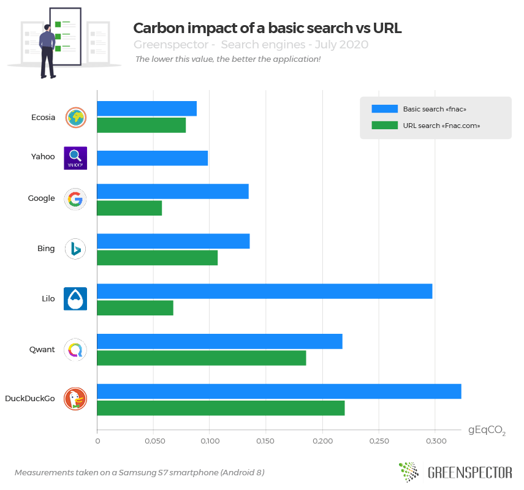
This is not a surprise and it is always better to measure it, we observe that a search by URL consumes much less on all the measured search engine applications. On average, there is a 35% reduction in the carbon impact. Therefore, prefer a search by URL (if you know it!) without going through the search results page in order to save energy and data!
For this first comparison, we recommend using Ecosia, which is the most efficient engine here, all research combined (0.167 gEqCO2) with a standard deviation of 0.377 gEqCO2 with the least sober in the DuckDuckGo ranking (0.5433 gEqCO2). The second place goes to Google (0.192 gEqCO2) which consumes 13% more than Ecosia.
These results are nevertheless very disparate between the different solutions since if on Ecosia the 2 types of research have almost the same impact, it is 2.3 times more important for Google and 4.4 times more for Lilo for example.
On a basic search, it will cost you a 50% higher battery impact with DuckDuckGo and 6 times more data received than with Ecosia. Nevertheless, we note that the memory consumption used by Ecosia is 1.5 times greater on the user’s smartphone in this scenario than the average of other engines. On this same route, we can also note that the lowest energy consumption for your batteries is that of Qwant (tied with Ecosia) due to a faster route. Here efficiency and user scenario performance go hand in hand. It should also be noted that for the most-used engine on the planet, Google is also the one that has the most autonomy impact on basic search, 28% more than the average for other engines. Special mention for Yahoo, which manages to reconcile a low impact and lower memory consumption (not taken into account in the calculation of the Carbon impact).
On a URL search, DuckDuckGo‘s carbon impact is 2.2 times higher than the average for other engines and almost 4 times higher than the most virtuous Google in this scenario. This is explained by low power consumption on the user device but above all with a data consumption 7.3 times less than the average of the engines and almost 15 times less than DuckDuckGo! Small consolation for DuckDuckGo, it also consumes the least memory on the user device with 50% less than the engine average and up to 93% less than the most memory-intensive Ecosia in this scenario again.
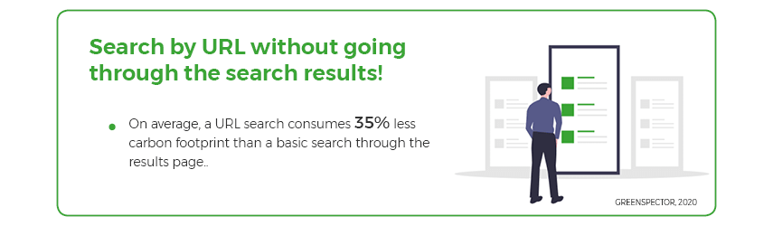
Local search, the impact of an interactive map

For this scenario, we run a local search. The keywords « Restaurant Nantes » are searched, most search engines then display an interactive map with a selection of restaurants.
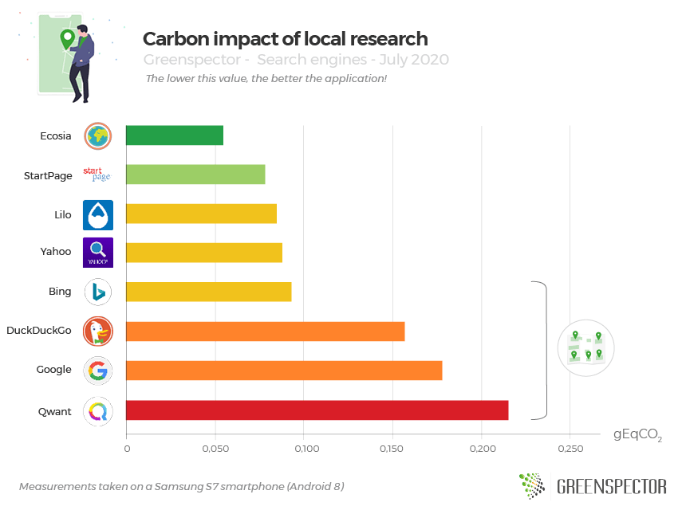
For this local search, four applications stand out by not displaying an interactive map on the results page: Ecosia, StartPage, Lilo (display of a Pages Jaunes list), and Yahoo. Although less practical for discovering the suggestions at a glance, we notice that these applications are less « carbon-intensive ». It is therefore not surprising that the display of a presentation cartographic representation is detrimental to the environmental impact.
If we take the averages of applications that do not display a map (0.076 gEqCO2) to those that display one (0.161 gEqCO2): we obtain a carbon impact difference of 52%. Maybe these solutions could offer a 2-step map display and only display the detailed map on user request?
In this ranking, Ecosia is also in the lead (0.055 gEqCO2) followed closely by StartPage (0.078 gEqCO2). The worst applications are Google (0.178 gEqCO2) and Qwant (integration of a PagesJaunes card, 0.216 gEqCO2).
The difference in carbon impact between the best and worst application is 74%. However and again Ecosia is also the one which consumes the most memory on the user device, 50% more than the average of the engines for a local search. In the end, only StartPage manages to combine a low carbon impact and lower consumption of memory resources.
To explain these differences, we can cite the data impact 10 times higher for Qwant compared to Ecosia and 2.7 times higher compared to the average for other engines. On the energy side, the differences measured are smaller, Google and Yahoo are the worst enemies of your battery and of the carbon impact on the user device with 28% more consumption on average than the average for other engines.
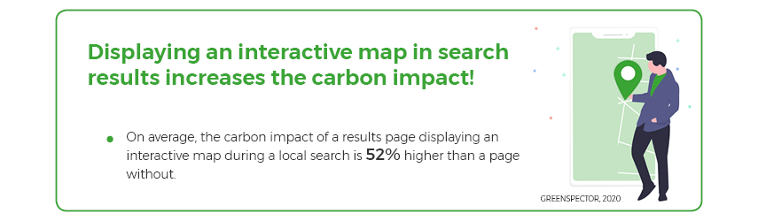
Targeted search, the impact of a weather widget

For this scenario, we launch a weather search for the keywords « Météo Nantes ». All engines work with a weather widget. Only the Lilo and Qwant engines do not display any and do not allow a direct view of the current weather forecast. However, Qwant displays in partnership with Yellow Pages, the nearest meteorological organization, skewing the results.
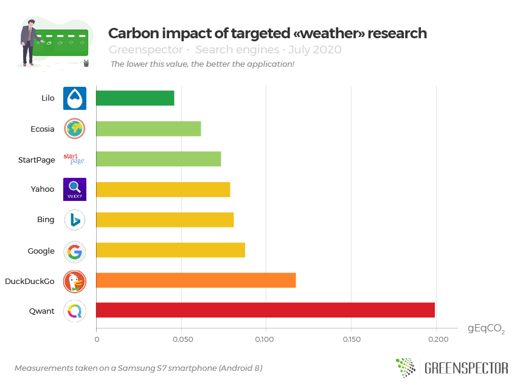
We observe for this search comparison targeted on the weather, that the Lilo application (0.045 gEqCO2) which does not display a weather widget, is at the top of the ranking. Followed by Ecosia (0.062 gEqCO2), the most efficient application of those which display a weather widget. Between Lilo and Ecosia, the difference in carbon impact amounts to 26%.
If we compare Lilo to the average of the applications displaying the weather widget (0.083 gEqCO2), the difference in carbon impact then amounts to 45%.
The most impacting engine with the weather widget is DuckDuckGo (0.118 gEqCO2), which is 1.9 times more than Ecosia.
For Qwant (0.199 gEqCO2), the research is inconclusive since the engine does not display a widget but the nearest weather station in the form of a Pages Jaunes business and cartographic representation. This practice is clearly more consuming/impacting, 2.5 times more impacting than the average of other engines, and 4 times more impacting than the Lilo engine.
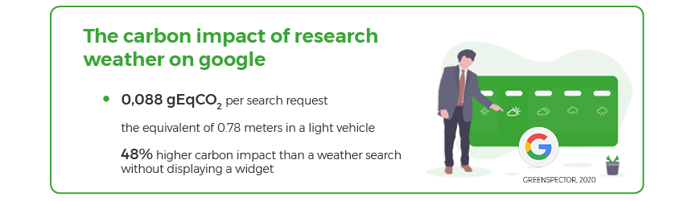
Lilo consumes little energy on the user device and little data. On this indicator, it consumes more than 4 times less data than the engine average and up to 11 times less than Qwant!
On the memory footprint and user battery consumption part, for targeted research, it is again the most efficient StartPage app with 47% less than the average energy consumption of other engines but also 44% less memory than the average. Yahoo, Qwant, and Google are also the most energy-intensive with an average consumption higher with 13% more than the other engines. On the memory side, it is again Ecosia which over-consumes with 50% more than the average of its competitors and almost twice as much as DuckDuckGo!
Search of a definition
In this part, we analyze different ways of approaching a basic search for a definition. We have chosen THE most searched definition on Google in 2019 in France, that of the word « Procrastination ». In addition, in order to save you research, we give you the meaning: Procrastination (feminine name) « tendency to postpone, to put systematically to the next day ». We will check the major research trends of 2020 in a future study!
Definition search

This scenario will be used as a basis for the next ones, we are launching a search for the keywords « procrastination definition ».
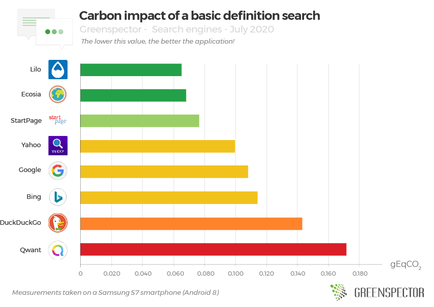
For a simple research, our top 3 carbon impact side consists of: Lilo (0.065 gEqCO2), Ecosia (0.068 gEqCO2) and StartPage (0.076 gEqCO2). Qwant is disadvantaged by its excessive data consumption, it is more economical in the energy consumed on the device since second on the energy consumption side.
StartPage, in addition to having a low impact, is also less « resource-intensive » in memory than the other engines and 2 times less than Ecosia, especially on this use case. StartPage is also the most energy-efficient and 2 times less than Yahoo in the same search scenario.
Qwant is again last in this ranking in terms of carbon impact because it is too expensive in terms of data, almost 3 times more than the average for other engines, and up to 6 times more than Ecosia.
On this same basic research and on the basis of the average impact of the 8 engines, the share of the impact linked to the network and to the mobile is preponderant and in equal share compared to the share of impact on the server which remains low.

However, this projection must be the subject of a more in-depth analysis by placing probes in data centers in particular.
On average, the carbon impact for all search engines is 0.106 gEqCO2. Google‘s, the most widely used engine in the world, is 0.108 gEqCO2, or the carbon impact equivalent of one meter (0.96m) carried out in a light vehicle.
If one projects based on Google usage statistics, here are some interesting numbers:
The carbon impact of the 80,000 requests made in 1 second (if all these requests were basic requests launched from a mid-range smartphone) worldwide is: 8,660 gEqCO2, ie the equivalent of 77 km traveled in a light vehicle. The carbon impact of a day of Google queries is a carbon equivalent of 6.7 million km in a light vehicle.
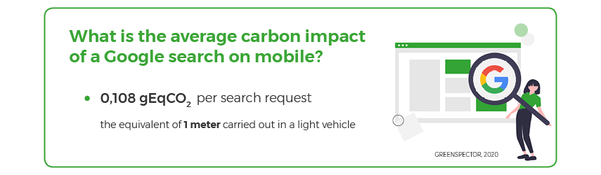
Definition search with autocompletion

For this auto-completion or « suggestion » scenario, we run a search for the « definition pro » keywords, the engine then displays a « definition procrastination » or « definition procrastinate » suggestion. We click on this proposition. To evaluate this scenario, we had to activate a parameter which allowed us to deactivate the auto-completion mode on the different engines, only 2 engines allow it and are therefore compared here on this scenario.
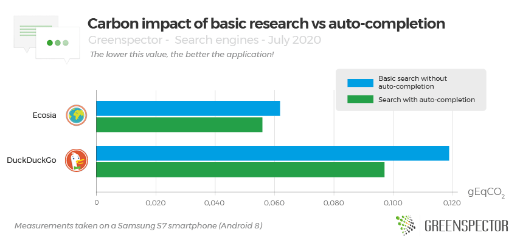
Only two search engine applications allow you to completely remove suggestions or auto-completion (Ecosia and DuckDuckGo). We note that for Ecosia, for equivalent energy consumption, a basic search without suggestions, the consumption of data exchanged is reduced by 11% compared to a search offering suggestions. On the DuckDuckGo side, a search without suggestions reduces energy consumption by 22% and the volume of data exchanged by 14%.
We observe on average that research using auto-completion reduces the carbon impact by 14%.
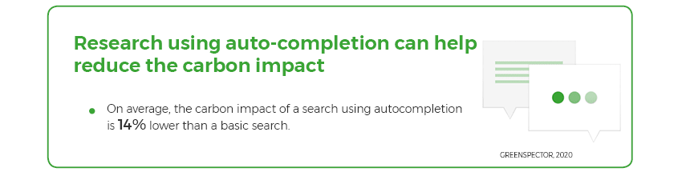
Definition search with dark theme

For this scenario, we activate the dark theme from the settings of the only two apps offering it: DuckDuckGo and Qwant and run the same search for the definition of the word procrastination.
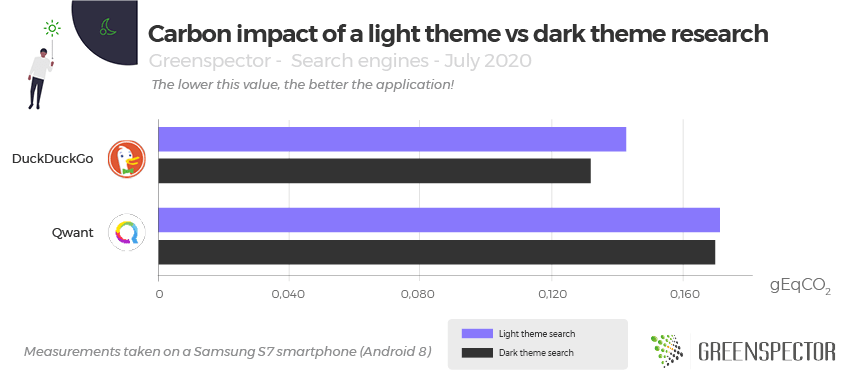
For these two applications offering the dark theme on mobile, on average the dark theme reduces the carbon impact by 3%. And a little more optimized for DuckDuckGo than for Qwant with an 8% gain on the default theme.
Definition search with active newsfeed

For this scenario, we activate the homepage newsfeed of some applications and compare with the without newsfeed version.
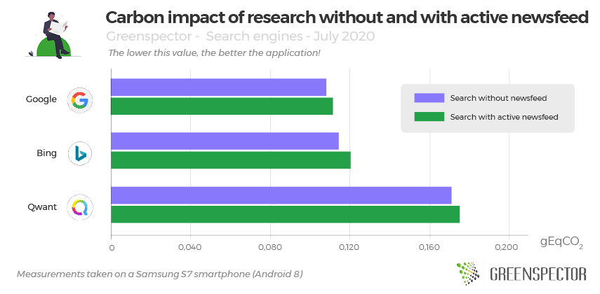
3 applications allow the activation and deactivation of the news feed present on the home page: Google, Bing, and Qwant. This has the effect of increasing the carbon impact of these three applications by only 3% on average, with an average increase in data of 4% on these 3 engines and a slight increase in local energy consumption. (1%)
Search with a web browser

For this scenario, we launch the Chrome web browser (version 83.0.4103.106), the measured search engine is previously defined as the default one. The search for definition is always that of the word procrastination.
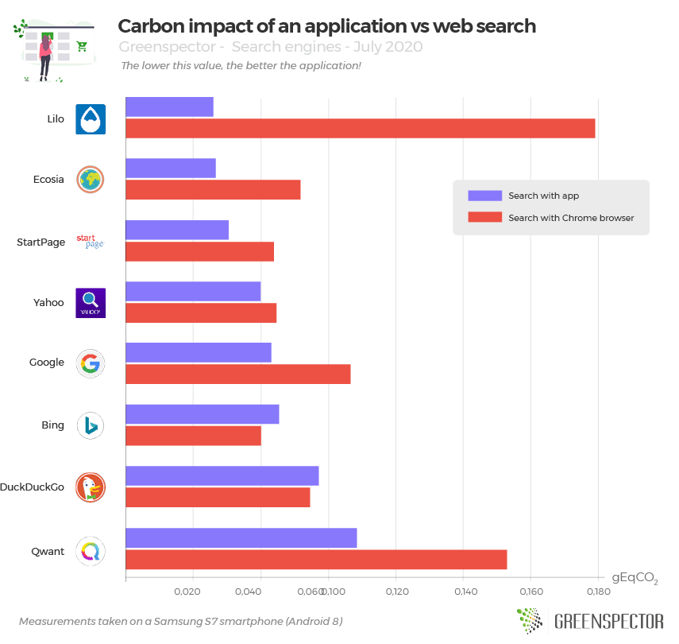
We chose to compare an app search and a browser search. For this measurement, we have chosen the Chrome browser, you can find our « best browsers to use in 2020 » study if you’re looking for a browser ranking. For two of the applications measured: DuckDuckGo and Bing, searching via Chrome is less impactful on average by 8%. For the other applications, for which browsing on Chrome is more impactful, this is an average difference of 116% but which goes up to multiply the impact by 5.3 for Lilo. Overall and on average, search through a browser on all of these engines is 64% more impactful than through the mobile application.
For all of these engines,
- energy consumption is stable and slightly lower on the web by 2% but with large disparities: + 48% for StartPage and minus 28% for Yahoo.
- Data consumption is growing sharply for web research, with a volume that doubles (+ 119%). There is a strong contrast, however: when Bing consumes 12% less (the only less « data-consuming »), others consume more with a peak for Lilo in particular (13 times more) and Ecosia (4 times more). Google remains in the average of 2 times more data on the web version.
- Local memory consumption also increases significantly for a mobile web search versus mobile application search with + 48%. Again, there is a strong contrast with Ecosia last on this criterion for the mobile application and first on this web search criterion with a decrease of 2%. For all the others, it is a strong increase within particular for DuckDuckGo (+ 115%) and StartPage (107%).
- Note that travel times have decreased by 6% partially explaining lower energy consumption in web search.
Our advice for eco-responsible search
When we observe the environmental impact of a search, it is difficult to give with certainty the best advice, a link saved in your favorites to go directly to the right information, good content will always have less impact than launching a new search. We have not tested other related areas such as the security/use of your data or the accessibility of solutions, here is some information that we could summarize:

- A shorter search process results in less energy/battery impact on your user’s smartphone and can help reduce the overall carbon impact across the chain.
- The carbon impacts of our research are mainly distributed between the network part and the user’s mobile part equally.
- A search has more impact via a mobile browser than with a mobile application (64% carbon gain on average).
- For the engines with the least carbon impact, opt for StartPage or Ecosia even if the latter consumes a lot of memory, a point to correct.
- To save your battery and your data plan, choose StartPage.
- If you’re having memory issues on an older smartphone, give DuckDuckGo a try.
- If you don’t see a need for it, turn off newsfeed widgets, interactive map display, and other weather widgets. Average carbon gain of 48% to 52%.
- Switch to dark to light displays, when available. Average carbon gain of 3%.
As for Google, which dominates the market, it is in the average carbon footprint but is also the one that on average consumes the most memory (40% more than other engines for all of these uses). Let us keep in mind that an average google request is equivalent to the carbon impact of a journey of 1 meter in an average light vehicle.
Methodology
For each of its applications, measured on an S7 smartphone (Android 8), the user scenario was carried out through our GREENSPECTOR Test Runner, allowing the performance of automated tests.
Each measurement is the average of 4 homogeneous measurements (with a low standard deviation). The consumption measured on the given smartphone according to a wifi type network can be different on a laptop PC with a wired network for example.
To assess the impacts of infrastructure (datacenter, network) in the carbon projection calculations, we relied on the OneByte methodology based on real data measured on the volume of data exchanged. This assessment methodology takes into account the consumption of resources and energy in use for the requested equipment. As this is a very macroscopic approach, it is subject to uncertainty and could be fine-tuned to adapt to a given context, to a given tool. For the Carbon projection, we assumed a 50% projection via a wifi network and 50% via a mobile network.
To assess the impacts of mobile phones in the carbon projection calculations, we measure the energy consumption of the user scenario on a real device and in order to integrate the material impact share, we rely on the theoretical wear rate generated by the user scenario on the battery, the first wearing part of a smartphone. 500 full charge and discharge cycles, therefore, cause a change of smartphone in our model. This methodology and method of calculation have been validated by the consulting firm specializing in eco-design Evea.
| Search engine | Version | Weight (MB) Samsung S7 | Playstore grade | Downloads | French Market Share (%) |
| Bing | 11.3.28207302 | 92,8 | 4,5 | 5 000 000+ | 3,83% |
| DuckDuckGo | 5.55.1 | 34,1 | 4,7 | 10 000 000+ | 0,86% |
| Ecosia | 3.8.1 | 137 | 4,6 | 5 000 000+ | 1,11% |
| 11.10.11.21 | 418 | 4,3 | 5 000 000 000+ | 91,68% | |
| Lilo | 1.0.22 | 86,7 | 4,3 | 100 000+ | N/C |
| Qwant | 3.5.0 | 179 | 4,0 | 1 000 000+ | 0,79% |
| StartPage | 2.1.5 | 7 | 4,4 | 500 000+ | N/C |
| Yahoo | 5.10.5 | 111 | 4,3 | 1 000 000+ | 1,32 % |